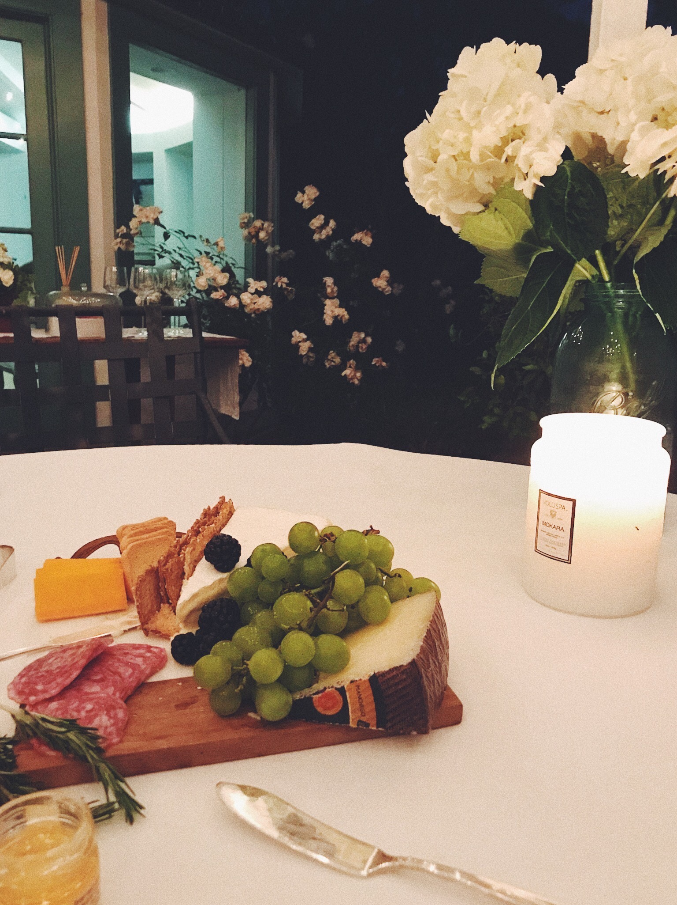

Breakfast: matcha, oatmeal topped with almond butter and blueberries. Lunch: Trader Joes black bean veggie pattie with butter lettuce wrap, topped with onion and tomato. Dinner: Trader Joes cauliflower gnocchi, homemade tomato sauce, topped with lemon pepper.
In quarantine, I went through a phase of making banana bread all the time and then I started to make my own focaccia. Currently, my roommates and I have loved putting together cheese boards. Here is a picture of a recent one we made!
